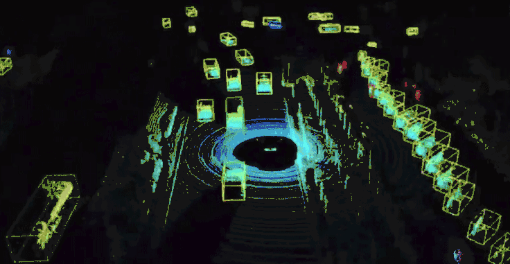

Apollo中点云3D障碍物分割的复现
本文介绍 Apollo中点云3D障碍物分割的复现
Apollo中点云3D障碍物分割的复现
This article was original written by Jin Tian, welcome re-post, first come with https://jinfagang.github.io . but please keep this copyright info, thanks, any question could be asked via wechat:
jintianiloveu
简单的记录一下，Apollo中基于点云的3D障碍物分割复现过程。首先来看一下爱apollo的效果：
似乎视频加载不出来。

这个效果看上去非常不错。基于没有漏掉检测，怪不得Apollo说是全天候，不分昼夜的检测，这种看来还是非常就u有客观的使用场景的。简单的归纳一下Apollo中的检测思路：
- 首先根据高精度地图把不关心的区域去掉;
- 对剩下的点云进行分割，关于这个分割，目前来看输入网络的并不是原始点云，也不是像素的分割。而是将点云处理成为单元格，预测每一个单元格的属性，这些属性包括：
- 中心偏移
- 对象性
- 积极性
- 对象高度
- 接下来是后处理，很多参数是可以进行自定义。
- MinBox的边框构建，关于MinBox的构建方法，很大程度依赖于聚类出来的点云的方向信息。
- 最后是基于匈牙利算法和鲁帮卡尔慢滤波的对象跟踪。
复现
由于apollo使用的是caffe，基本上等于是没有开源，但是这里面多很思路值得借鉴和思考。比如，用分割的方法来拿到cell的基本属性，那么有了这些点，后续的边框构建和跟踪都很方便。分割器的输入为8个特征量，作为图像的8个通道：
1. 单元格中点的最大高度
2. 单元格中最高点的强度
3. 单元格中点的平均高度
4. 单元格中点的平均强度
5. 单元格中的点数
6. 单元格中心相对于原点的角度
7. 单元格中心与原点之间的距离
8. 二进制值标示单元格是空还是被占用如
简单的分析一下，这些通道包含了这个点的基本信息，诸如最大高度，最高点强度，平均高度，平均强度等。这个本质我觉得是一个俯视图，只不过通道是8. 事实上，可以使用过滤无关障碍物之后的点云，也可以采用整个点云进行处理，网络似乎会基于所有点云进行构建。这里居然在训练的时候考虑了单元各距离原点的距离和方位信息，这些信息对于预测对象的位置有什么作用？
对比一下现在的一些俯视图的方法，仅仅只是拼接了一个通道，比如只用强度，只用高度等。诸如PIXOR这样的方法不知道在进行俯视图拼接的时候用了哪些变量。接下来来看看输出是啥：
1. 中心偏移：center offset
2. 对象性：objectness
3. 是否是对象：positiveness
4. 对象高度: object height
得到上面4个值之后，就可以对对象进行聚类了。这类的方法是有开源的，在这里。聚类的时候，基于中心偏移预测构建有向图，采用压缩的联合查找算法，基于是否有对象来构建障碍物聚类。

这里，红色的箭头表示的是单元格对象中心偏移预测，这里的中心便宜可以理解为方向，蓝色区域表示objectness在0.5以上的单元格，打概率表示这里会有物体。最终你会发现预测的中心点偏移会指向一个“真正的中心”，从而就构成一个聚类。
接下来就是后期处理了，接下来就是处理上面的聚类结果，每个聚类结果对象都由若干个单元各组成，有一点无法解释的是，他是如何得到物体类别的呢？在这里我们似乎无法得到物体的类别？比较难。这里类别的判断似乎是根据高度来的？
接着就是边框的构建了，通过刘变形进行构建。六边行的方案确实是一个比较好的方案。
接下来是基于匈牙利算法的跟踪，这篇博客写的不错：波尔
最后总结一下：由于这个方法未完全开源，也许我们能做的，只能把caffemodel更新，先跑通一下，在那个基础之上，再进行更新。
- 原文作者：金天
- 原文链接：https://jintian93.github.io/post/2019_02_25_17_Apollo%E4%B8%AD%E7%82%B9%E4%BA%913D%E9%9A%9C%E7%A2%8D%E7%89%A9%E5%88%86%E5%89%B2%E7%9A%84%E5%A4%8D%E7%8E%B0/
- 版权声明：本作品采用知识共享署名-非商业性使用-禁止演绎 4.0 国际许可协议进行许可，非商业转载请注明出处（作者，原文链接），商业转载请联系作者获得授权。